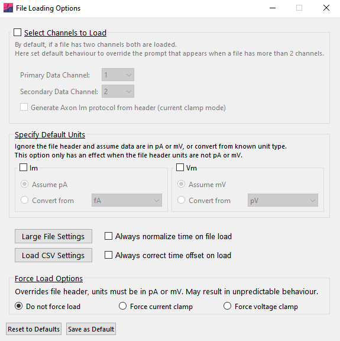
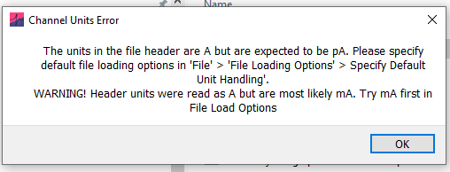
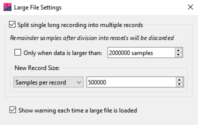
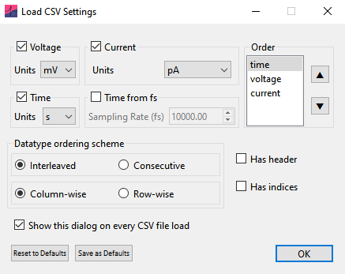

Loading files
Easy Electrophysiology supports the following file types:
- Axon ABF-1 and ABF-2 (
.abf) - AxoGraph (
.axgx,.axgd) - HEKA (
.dat) - WinWCP (
.wcp) - WinEDR (
.edr) - WaveSurfer (
.h5) - Spike2 (
.smr) - Igor Binary Wave (
.ibw) - comma-separated values (
.csv)
Please get in contact if you have another file type you would like to see supported.
Files can be dragged and dropped directly onto the main window or loaded by selecting File › Open File. Note that the sampling frequency must be identical for all records in the file. Multiple files can also be loaded at once, and they will be concatenated together. A window for selecting the order and method by which the files are concatenated will appear.
For some .abf files, all records may be erroneously concatenated to a single record (typically if exported from software that is not pClamp). If this occurs, see Reshape Records or Large File Settings in this manual.
The following default file-loading options can be set under File › File Loading Options:

Select channels to load
Data from up to two channels can be loaded at once. The Primary data channel is used for all analysis and displayed in the upper graph. By default, the first channel in the file is selected as the primary data channel. The Secondary data channel is typically used for current or voltage injection protocols. In Action Potential Counting and Input Resistance analysis, \(I_\mathrm{m}\) values are calculated from the secondary data channel.
If the file contains more than two channels, default channels to load can be selected from the dropdown. To load only one channel, set Secondary data channel to None.
Generate Axon Im protocol from header will generate the secondary data channel from Axon files in which the stimulus protocol is stored in the header rather than in raw data. This option is only available in current-clamp mode.
Specify default units
Analysis routines expect units in seconds (\(\mathrm{s}\)), picoamperes (\(\mathrm{pA}\)) and millivolts (\(\mathrm{mV}\)). If time units are detected as milliseconds (\(\mathrm{ms}\)) in the file header, they will be automatically converted to seconds. If units are not in \(\mathrm{mV}\) or \(\mathrm{pA}\), a window will warn that the file contains unexpected units. To load the file, select Specify default values and choose the source units from the dropdown (e.g. if the file units are in \(\mathrm{A}\), select conversion from \(\mathrm{A}\)).
In some cases, the units specified in the file header do not match the true values. In this case, the dialog will also show a warning and an estimate of the true unit scaling. Again select Specify default values and choose the appropriate source units, or select Assume pA / mV (e.g. if the file header is in units \(\mathrm{A}\) and \(\mathrm{V}\) but the data is scaled to \(\mathrm{pA}\) or \(\mathrm{mV}\)).
These options only have an effect when the file header is not in \(\mathrm{pA}\) or \(\mathrm{mV}\).

Normalize cumulative record times
Enable Always normalize time on file load when time is recorded as cumulatively increasing across records. See Normalize Time in this manual for more details.
Correct non-zero time offsets
Enable Always correct time offset on load to correct a non-zero starting timepoint automatically. On some recording setups, a small offset is added (e.g. Record 1 starts at \(0.02\ \mathrm{s}\)); if detected, a window will warn the user. Automatic correction is recommended because an unnoticed offset can introduce errors when user-input times are required. For example, a stimulus entered as starting at \(0.1\ \mathrm{s}\) may occur on the trace at \(0.12\ \mathrm{s}\).
Force analysis mode (voltage or current clamp)
By default, Recording type (current-clamp or voltage-clamp) is automatically detected from the primary and secondary channel units in the file header. This determines which analyses are available to run; for example, action-potential analysis is only possible for current-clamp recordings.
Here automatic detection can be overridden and the selected analysis options will be available no matter the loaded filetype. Note that this may result in undefined behavior if incorrect analyses are conducted (e.g. Action Potential Counting on voltage-clamp data).
Improve performance for large files
Use Large File Settings to reshape a large single-record file into multiple smaller records on loading. Large single-record files may run slowly, and splitting them can significantly improve performance:

To keep large files as a single record, turn off reshaping by unchecking Split single long recording into multiple records.
Set how large a file must be before it is reshaped using Only when data is larger than.
The method used to determine the number of records that the file is reshaped into can be selected from the drop-down menu. The options include:
Samples per record: The number of samples each record in the file will have after reshaping (default 500k).
Num. records: The number of records the file will have after reshaping.
Optimal performance: Find the record size closest to 500k samples (within the 400–700k range) that minimizes the number of discarded samples.
Time (s) per record: The length of each record (in seconds) after reshaping.
By default, a warning is shown whenever a file’s records are reshaped on loading. This can be turned off using Show warning each time a large file is loaded.
Load CSV files
Use Load CSV Settings to describe the layout of a comma-separated value (.csv) file. Because CSV layouts vary, this window is shown when configuring CSV loading to help determine the file layout:

The first step is to indicate the data types in the file and their order. The file may contain voltage, current or time data. For each selected data type, use Units to specify the source units used in the CSV file. If the file does not contain time data, select Time from fs and enter the sampling rate in Sampling Rate (fs).
The order in which the channel data are arranged must also be specified (for example if the voltage channel data is first, then current channel data, the order will be voltage then current):
Interleaved or consecutive: Specifies whether channel data are interleaved across records or arranged consecutively in groups. For example, a five-record recording with voltage, current, and time channels would be interleaved as \(v_1\), \(c_1\), \(t_1\), \(v_2\), \(c_2\), \(t_2\), …, \(v_5\), \(c_5\), \(t_5\), or consecutive as \(v_1\), \(v_2\), …, \(v_5\), \(c_1\), \(c_2\), …, \(c_5\), \(t_1\), \(t_2\), …, \(t_5\).
Column-wise vs. row-wise: Specifies the orientation of channels and records. If column-wise, each channel or record is a separate column and time increases along rows. If row-wise, each channel or record is a separate row and time increases along columns.
Has header: Select when channels or records have a header row (for column-wise data) or header column (for row-wise data). The header is ignored when loading. Only one header row or column is supported; multi-line headers must be deleted before loading.
Has indices: Select when the time dimension has an index column (for row-wise data) or index row (for column-wise data). The indices are ignored when loading.